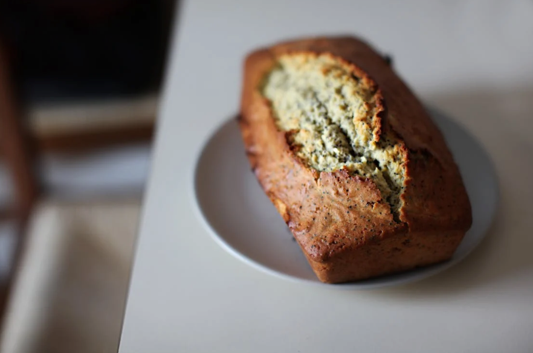

Banana Bread
With overripe bananas, applesauce, and vanilla extract, this classic banana bread is soft, flavorful, and
incredibly moist. I tested this recipe a dozen times to make the best banana bread with amazing banana flavor
and only a little fat. Whether you’re a seasoned baker or a newbie, this is perfect for any occasion, such as
breakfast, back-to-school snacks, or even as a sweet gift.

Why you'll love this recipe:
Healthy: I swap the oil or butter for applesauce, making this loaf much lighter than most banana bread
recipes.
Easy: This quick bread is quick and easy! You don’t have to wait for it to rise. Just mix the ingredients
and bake.
Make it Ahead: Banana bread is perfect for meal prep. It’ll last all week in your fridge or freezer.
Dairy-Free: I used coconut oil instead of butter to keep it allergy-friendly.
Ingredients
- Baking spray
- Large ripe bananas, (11 oz in weight or 1 1/3 cup total), mashed chunky with fork
- Unbleached all purpose flour, (8 ounces total weight)
- Baking powder
- Baking soda
- Salt
- Coconut oil, butter works too
- Light brown sugar, I used Lakanto monk fruit 3.2 oz
- Large egg
- Unsweetened apple sauce
- Vanilla extract
Instructions
- Preheat oven to 350°F. Grease a 8x5 inch loaf pan with baking spray.
- In a medium bowl, combine the dry ingredients; flour, baking powder, baking soda and salt with a wire whisk.
Set aside.
- In a large bowl cream coconut oil, apple sauce and sugar with an electric mixer or stand mixer. Add egg and
vanilla, and beat at medium speed until thick.
- Scrape down sides of the bowl.
- Add 1/2 of the dry ingredients and blend at low speed until combined, add remaining 1/2 of the dry
ingredients and the mashed bananas and blend at low speed until batter is combined. Do not over mix.
- Pour the batter into the loaf pan and bake on the center rack for about 45 to 50 minutes, or until a
toothpick inserted in the center comes out clean, but moist.
- Let the pan cool at least 10 minutes, bread should be room temperature before slicing.
Tips
How to ripen bananas quicker
Place bananas in a paper bag and leave them in a warm area for quicker ripening. When the peels get spotted and
blacken slightly, and become soft they will be ready
How to store banana bread
Once the bread cools, store it in an airtight container for one day on the counter and then in the fridge for up
to a week.
This recipe was originally posted on skinnytaste.com